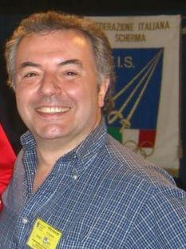
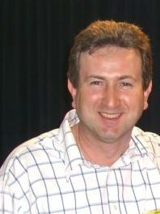

Salta
menù
contenente anche il
link
per l'accesso all'area riservata
ARTICOLO
DOCUMENTI
STORIA
STAFF
CORSI
Area Riservata
Mappa del sito
Ti trovi in:
Staff
Salta contenuto e vai alla
sidebar
contenente
link
ad altri siti di scherma e agli
sponsor
Presidente e Maestro: Giuseppe Tagliariol

Maestro: Davide Cenedese

LINK
ESTERNI
SPONSOR LINK
Fabbian
Goppion
Carminari
Gnocchi
Master
SCHERMA
LINK
FIE
Federal Scherma
Scherma Veneto
Comune Castelfranco Veneto
GALLERY